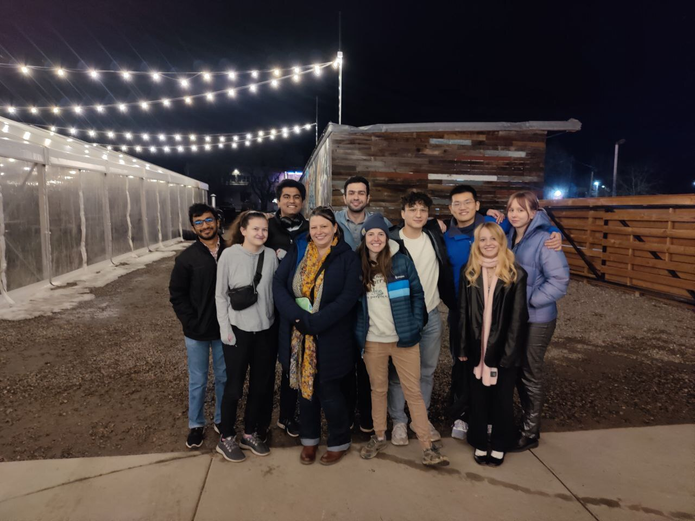

Welcome to LECS!
We are the Low-Resource and Endangered Languages and Computational Semantics group at the University of Colorado led by Prof. Alexis Palmer. We are based jointly in the CU Department of Linguistics and Department of Computer Science.
Research Interests
We study NLP for low-resource, endangered, and Indigenous languages, linguistically-inspired NLP, and computational approaches to morphology, syntax, and semantics. We are curious about research questions such as the following:
- How can traditional linguistic theory contribute to NLP methods?
- Conversely, how can we interpret and evaluate state-of-the-art NLP techniques with a linguistic framing?
- How can NLP methods support the documentation and preservation of endangered languages?
- What are the best approaches for enabling language technology for low-resource (and often Indigenous) languages?
Ongoing Projects
Currently, our members are working on a variety of research projects in areas such as:- Automatic generation of interlinear glossed text (IGT) with finetuned neural models and large language models (LLMs). See Ginn et al. (2023), Shandilya and Palmer (2023), and Ginn and Tijutja et al. (2024) for representative work.
- Uniform Meaning Representations (UMR) for symbolic representations of semantics, and conversion with other forms such as Abstract Meaning Representations (AMR). See Bonn et al. (2023), Post et al. (2024), and Buchholz et al. (2024).
- Educational resources for low-resource language technology development, particularly for learners with minimal technical experience. See the BELT website and Ginn et al. (2024).
Latest News
The BELT paper won Best Paper at the Teaching NLP workshop at ACL 2024!
August 2024
Enora presented TAMS: Translation-Assisted Morphological Segmentation at ACL 2024!
August 2024